Iterative Design
You explore and use professional design tools and you iteratively design visual works.
Inhoudsopgave
- Fontys Health Innovation
- Stylescape Health Innovation
- Youtube Livestream Photoshop
- Visual Planning Content Strategy
- Nasmak
- Nasmak Gorillaz idee
- Photoshop Instagram posts
- Photoshop Facebook post
- Portfolio Design
- Figma link
- Inspiratie
- Mijn Design
- Development Design
- Figma link (Development)
- Project X
- Figma link project X
- logo design
- header design
Fontys Health Innovation
Stylescape Health Innovation
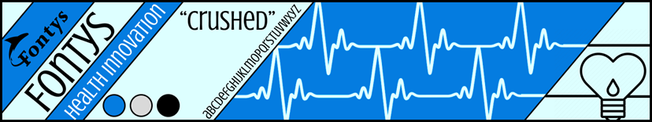Bij dit design wilde ik het fontys logo implementeren samen met de stijl van health en innovation. Ik heb gekozen voor electrocardiogram lijnen die overlopen naar een hart met een lampje. Het lampje zou staan voor ideeën, Wat bij innovation hoort. En het hart natuurlijk bij Health.
Ik heb voor lichtblauw en blauw gekozen omdat deze kleuren een kalme, betrouwbare uitstraling hebben die goed past bij de zorgsector (daarom dragen doctors vaak een blauwe overal). Blauw geeft een gevoel van professionaliteit en vertrouwen, wat belangrijk is als je met mensen in de gezondheidszorg werkt. Samen geven deze kleuren een frisse en positieve vibe, die laat zien dat de minor vernieuwend bezig is.
Voor de Font heb ik gekeken naar een gratis font die goed leesbaar is, heel veel meer gedachte had ik er daar eigenlijk nog niet ingestopt.
Youtube Livestream Photoshop
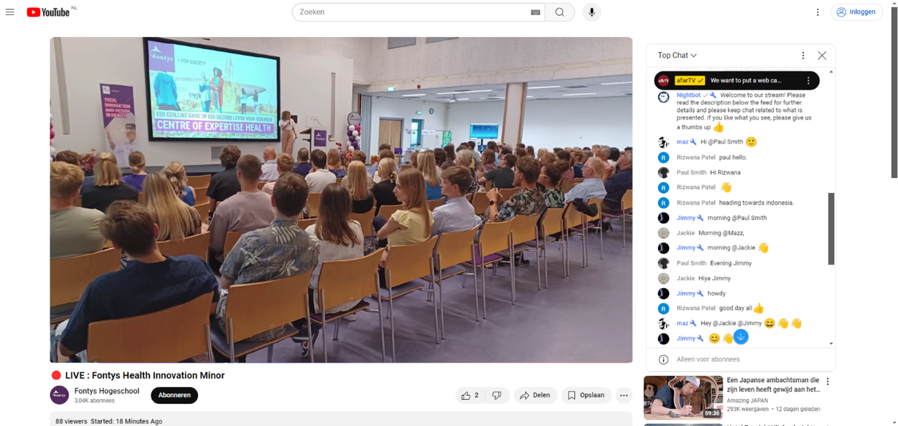Ik heb via photoshop ook nog 2 livestreams gemaakt voor het idee dat fontys ook livestreams kan geven om de minor health innovation meer aandacht te geven.
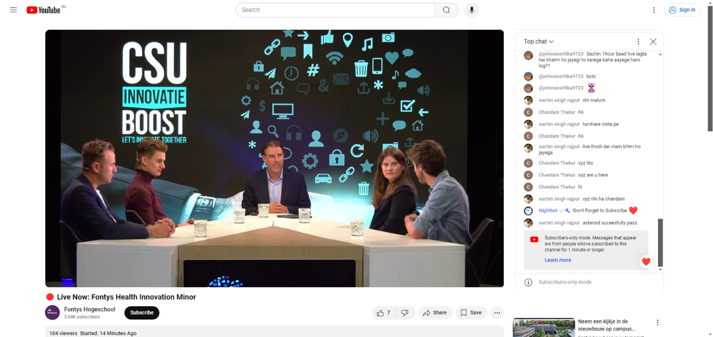Hier had ik een screenshot gemaakt van een random livestream op youtube en dingen zoals de title, eigenaar van het kanaal en natuurlijk de livestream zelf aangepast zodat deze passen bij de minor Fontys Healthcare.
Visual Planning Content Strategy
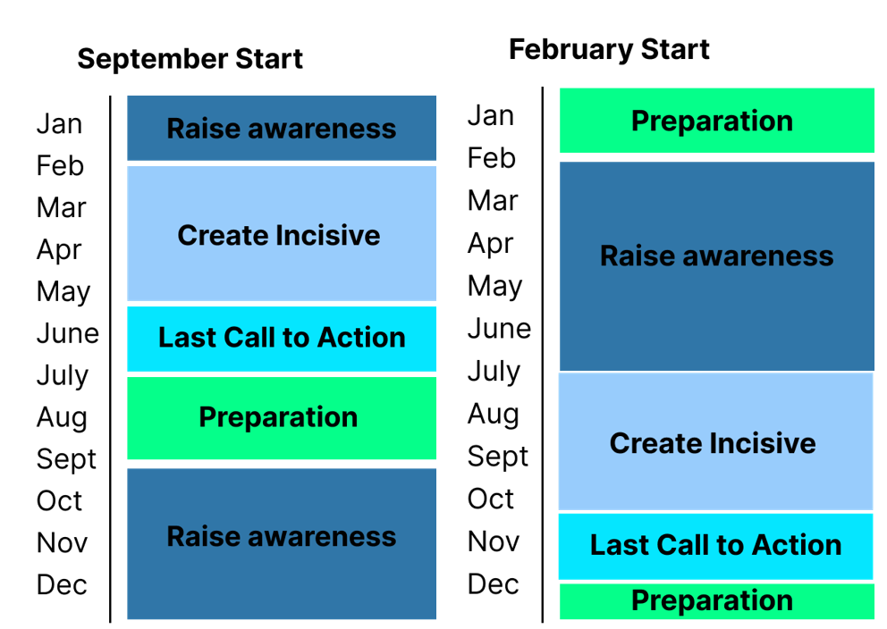Uit de informatie van wanneer de minor begint en wanneer de inschrijf momenten zijn heb ik 2 visuals gemaakt die een planning aangeven die de minor kan gebruiken voor het plaatsen van content op social media. Dit is simpel overzichtelijk zodat het makkelijk is te begrijpen bij het presenteren van deze planning.
Nasmak
Nasmak Gorillaz idee
Gorillaz is ook een band die ik interessant vind en passend bij de stijl van Nasmak. De band staat erom bekend dat elk bandlid in een stripachtige figuur wordt afgebeeld, wat serieus cool is maar lastig aangezien op elke poster of post deze figuren andere houdingen zouden hebben.
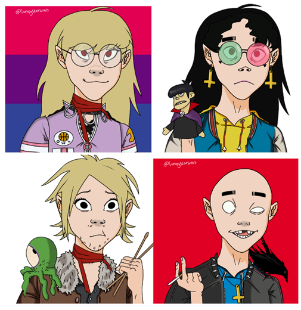Toch heb ik via een design website met een “cartoon maker tool” een paar voorbeelden gemaakt van hoe dit eruit zou zien. Dit hebben we verder in het project niet gebruikt maar ik vond het wel grappig om te proberen te maken.
Ik ben hier wel op terug gekomen door feedback te vragen van nasmak wat ze hier van vinden. Hieruit kwam dat Richard (het nieuwste lid van de band) dit idee wel heel vet vond en ook bekend was met de band Gorillaz, de andere hadden nooit van de band gehoord en hoewel ze het idee grappig vonden ze het niet terug wilden zien in verder werk.
Photoshop Instagram posts
Andrej had een paar posters gemaakt en doorgestuurd in de groep, waarvan ik deze via photoshop in een Instagram post heb verandert.
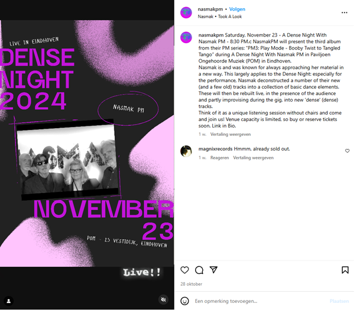Photoshop Facebook post
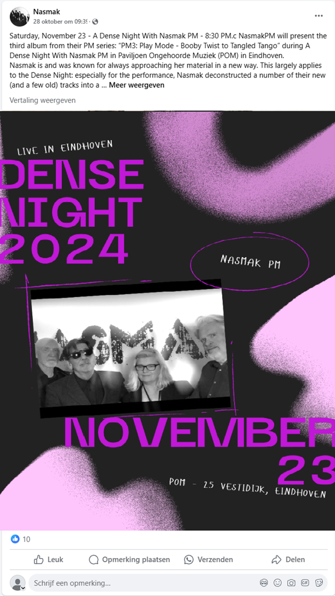hier heb ik ook met behulp van photoshop een facebook post van Nasmak geëdit met de poster die wij hebben gemaakt erin.
Portfolio Design
Figma link: https://www.figma.com/design/5WC8XD6dYe6Iy9ji46IimV
inspiratie
Als eerste ga ik zoeken naar inspiratie van andere portfolio’s en de dingen die ik daar cool aan vindt noteren. Daar kan ik dan een combinatie van maken in mijn eigen stijl waardoor ik hopelijk een super vet portfolio heb.
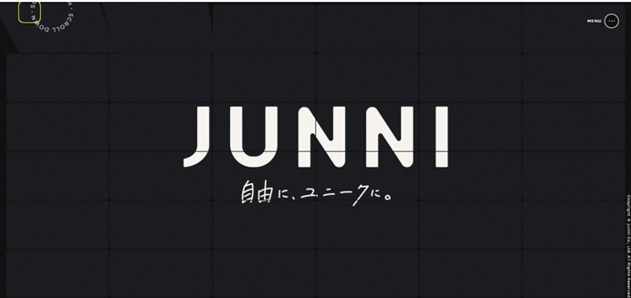https://junni.co.jp/
Dit is een andere website die ik echt super vet vind. Qua kleurgebruik is het heel simpel, namelijk zwart en wit met een felle geel/groene kleur die de echt eruit springt. En de manier waarop je door de website heen gaat is satisfying en maakt je benieuwd naar wat er nog meer allemaal voor interessante content en animaties op staat.
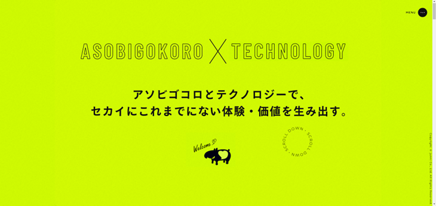Ook de animaties die in de website zitten vind ik enorm cool en lijkt me een leuke uitdaging om dit te proberen te maken in mijn website. Dit maakt het veel interessanter voor iemand die je portfolio doorneemt, dus dit leren lijkt me een slimme zet voor als ik dit later in het bedrijfsleven wil maken. Een ding wat me opvalt is dat ik grote fullscreens met daarin informatie of visueel vette dingen iets is wat mij aantrekt en wat mijn stijl denk ik is.
Mijn Design
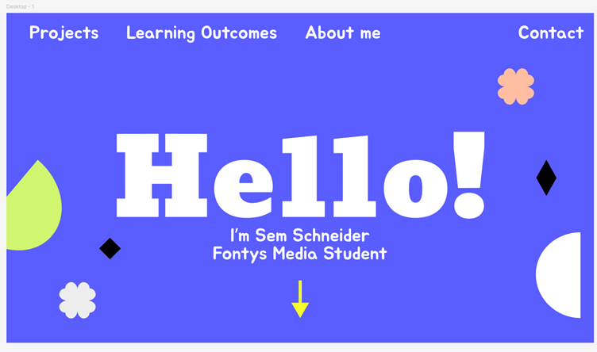Ik ben begonnen door eerst zelf een “homescreen” te maken wat je zou zien zodra je op de website ziet. Hier heb ik rekening mee gehouden dat er mogelijk wat animaties toegevoegd kunnen worden zoals bewegende figuurtjes als je je muis beweegt.
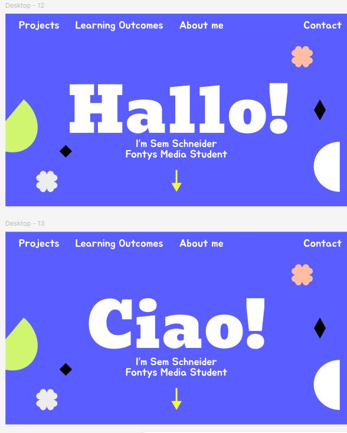Hier wil ik een tekst animatie toevoegen die de tekst weghaalt, en opnieuw intypt. Ik weet niet hoe je deze animatie noemt maar ik heb wel een soort voorbeeld gevonden op youtube.
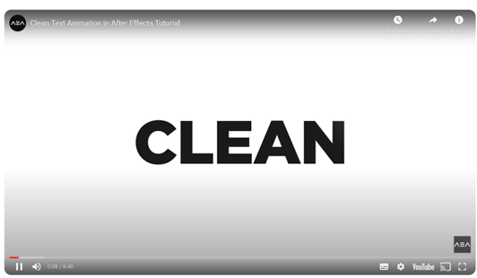https://youtu.be/i6Gm429o8k0
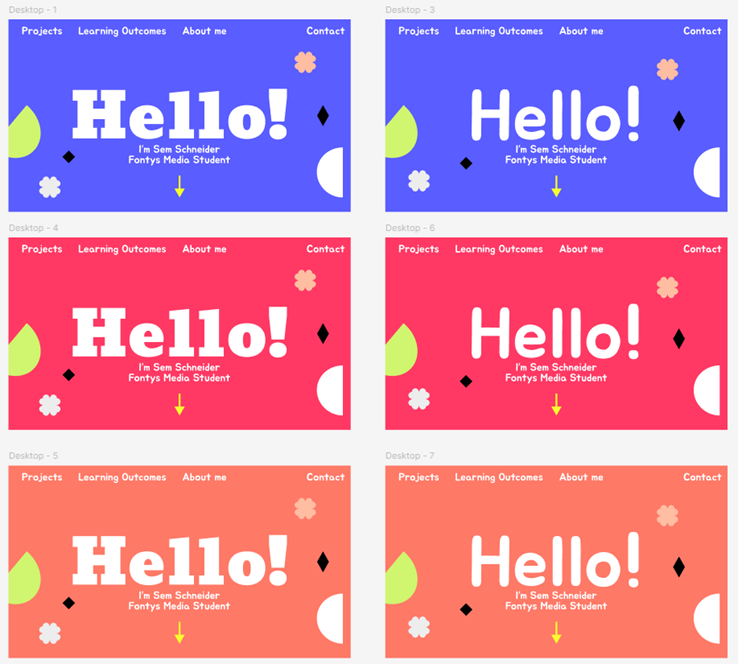Ook heb ik gevraagd of verschillende fonts en kleuren die ik op de achtergrond kan gebruiken, beter is dan mijn originele design. Ik vind de rode kleur wel iets hebben, en de oranje kleur past weer heel erg goed bij de herft en de algemene vibe die je krijgt als je nu buiten kijkt, maar blauw oogt het fijnst en is een makkelijke kleur om mee te werken en combinaties mee te maken volgends Anke.
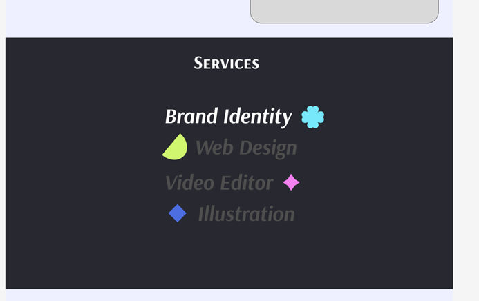Onder het stukje van de projecten heb ik een stukje met de services / skills die ik heb op het gebied van ict media. Hier kunnen bedrijven je voor benaderen om dit mogelijk voor hun te doen. Hier wil ik een animatie toevoegen dat als je over deze tekst heen hovered, de grijze tekst wit word.
Development Design
Figma link: https://www.figma.com/design/DCgGlKbMCThoUHKIe3KqhQ
We waren begonnen met het opdelen van de pagina’s waarbij ik de ticket pagina kreeg. Ik was daarna begonnen met een wireframe tool gebruiken om icoontjes makkelijk in figma te slepen en daarmee een wireframe te maken.
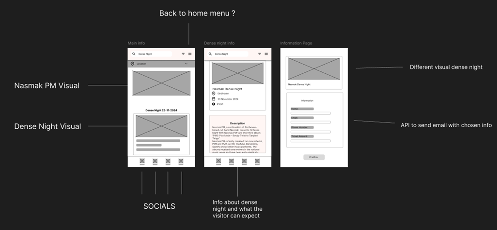Toen ik meer research deed kwam ik er achter dat veel ticket sites er uiteindelijk hetzelfde uitzien omdat velen worden doorgeleid naar een site genaamd “Eventix” waar ze uiteindelijk de tickets kopen.
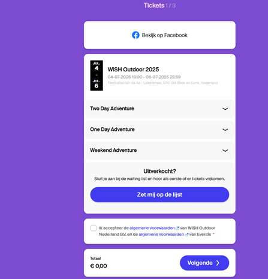Toen kwam ik op het idee om deze stijl te hanteren maar dan met een Nasmak stijl.
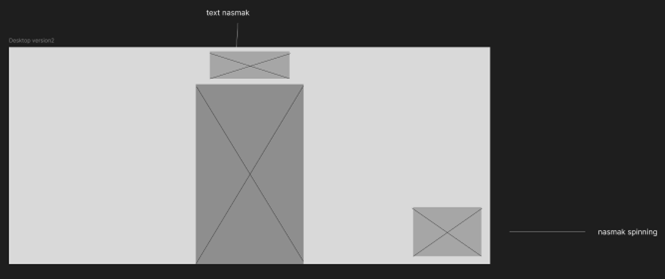Zo ziet het er in de simpelste vorm eruit, een rechthoek in het midden met daarin de informatie over de kaartjes en waar je de hoeveelheid aangeeft. Onderaan kwam het 3d model van nasmak wat rond draait (dit was een goed idee van Andrejs wat we over elke pagina hebben gedaan)
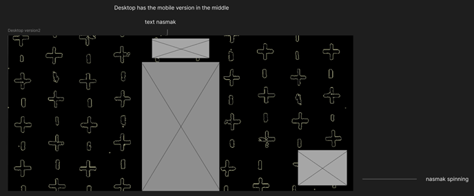Hier zit de achtergrond er ook bij (deze achtergrond is een bestaande achtergrond van Nasmak met een filter erover zodat de kleuren veranderen)
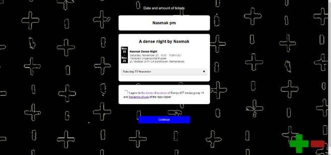Dit is het eindresultaat van het design geworden. Hier zie je ook het plus en min logo 3d logo wat Andrejs heeft gemaakt erbij staan.
Project X
Figma link: https://www.figma.com/design/qMYpcoZucGFCGkK2j2IGjc
Als eerste heb ik onderzoek gedaan naar andere elektriciën bedrijven en kijken wat hun stijl is. Daar viel me op dat de kleuren die het meest gebruikt worden; geel, oranje en blauw zijn. De kleur oranje past in mijn mening ook erg goed bij het werk van een elektriciën, maar dit bevestigd dat ik niet de enige ben die dit in gedachte had. Het eerste kleurenpallet wat ik had gemaakt heeft daarom ook beide blauw, en een donkerdere kleur geel die ook een beetje richting oranje gaat.
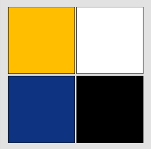Logo design
Ik ben daarna logo's gaan maken via canva, om die vervolgens aan mijn stakeholder te laten zien en daar feedback op te vragen en om te kijken of hij er eentje zou willen gebruiken als logo.
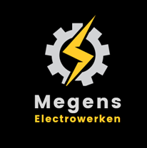 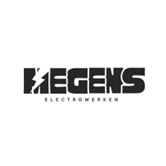 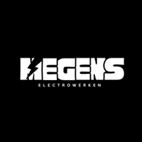 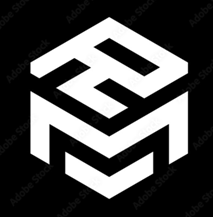 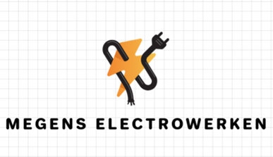
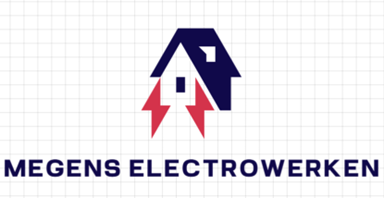
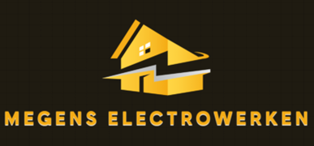
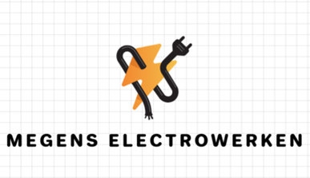
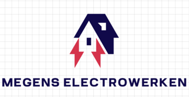
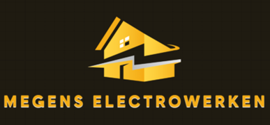
Hieruit kwam eigenlijk de conclusie dat mijn stakeholder zijn logo wat hij altijd heeft gebruikt wil blijven gebruiken. (stakeholder had niet doorgegeven dat hij al een bestaand logo had en ik had er zelf ook niet aan gedacht dit vantevoren te vragen.) Persoonlijk vind ik dit niet echt een mooi en professioneel logo, wat ik ook tegen hem heb verteld, maar hij zou deze graag willen blijven gebruiken
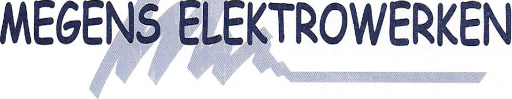dit is het logo dat mijn stakeholder al jaren had en graag wil blijven gebruiken
Vervolgens ging ik werken aan de header van de website, ik wilde hier een grote image gebruiken die je scherm vult en daar tekst erin
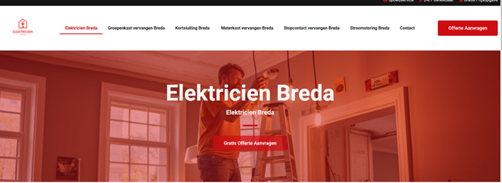Header Design
Hier zie je een voorbeeld van een header van een andere elektricien, er zijn heel veel andere websites met een soortgelijke header dus die heb ik als inspiratie genomen.
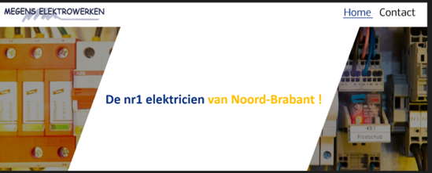 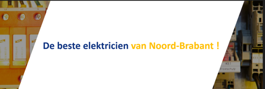Eerst had ik dit design gemaakt, hierbij is de tekst goed leesbaar die je bij de image wilt zetten, maar ik vind het grote vlak in het midden te groot waardoor de pagina heel leeg lijkt. mijn stakeholder en Anke waren het hier volledig mee
Ik had ook al gespeeld met de tekst die ik erin wil zetten, ook hier heb ik gekeken naar wat andere soortgelijke bedrijven of zzp’ers hebben en dit geprobeerd toe te voegen aan deze website.
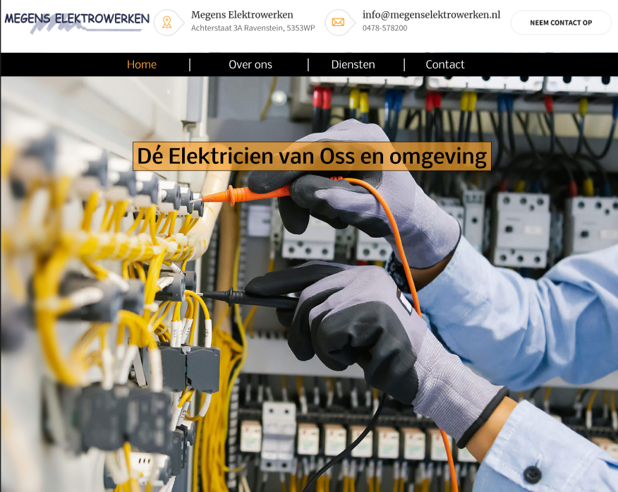Na feedback van mede studenten heb ik er toch voor gekozen om een grote image te gebruiken die het scherm vult, met daarin tekst. deze stijl wordt bij heel veel andere websites ook gebruikt en de stakeholder vindt dit er ook beter uitzien.
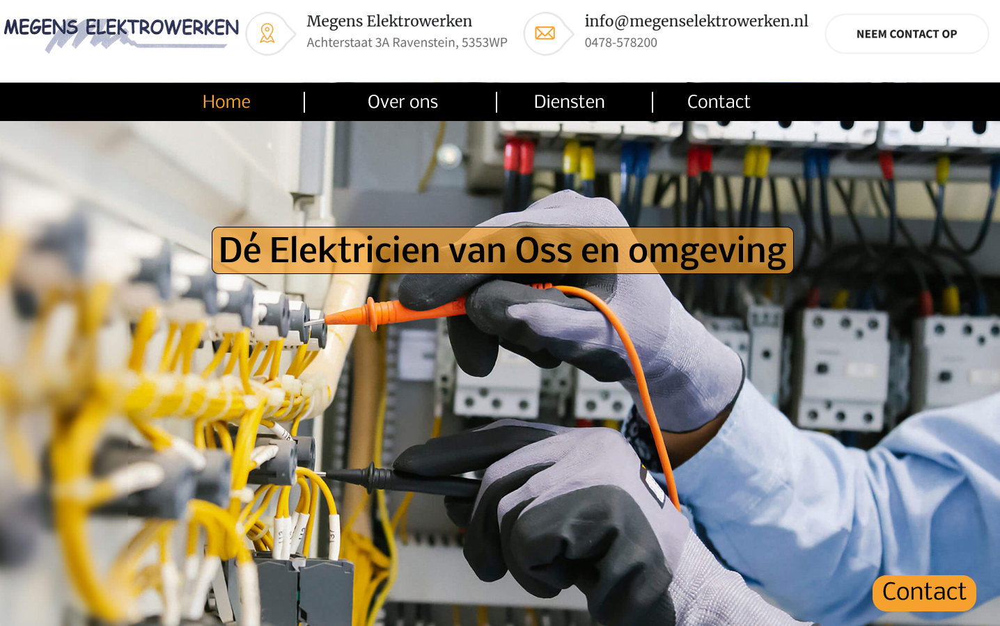Daarnaast kreeg ik ook feedback over de call to action die de stakeholder graag wilde hebben, namelijk dat mensen contact met hem opnemen als ze een elektriciën nodig hebben. Hiervoor heb ik een contact knop toegevoegd die fixed is zodat deze altijd op je scherm is. Ik heb ook een iteratie gehad met een mail logo rechtsonder maar Anke gaf als feedback dat de tekst contact ook heel sterk is, dus heb ik het hierbij gehouden.
Diensten design
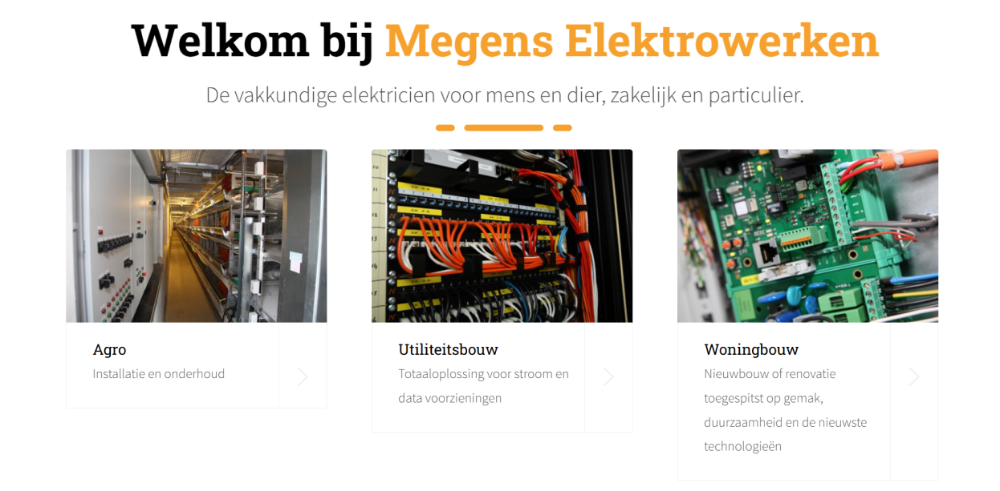voor het stukje informatie heb ik gekozen voor 3 images met daaronder de informatie. Ik kwam al snel bij het design met 3 blokken langs elkaar, maar ik heb ook geprobeerd het 2x2 te maken voor als er ooit iets toegevoegd moet worden, maar dit was niet nodig volgends de stakeholder
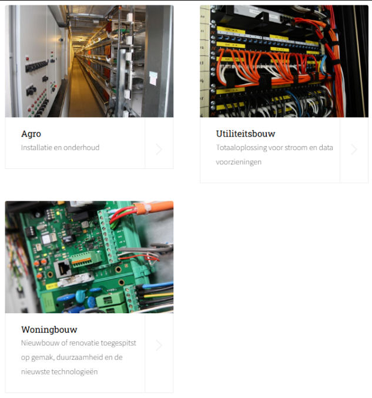deze stijl was dus niet nodig volgends de stakeholder, meer dan 3 blokjes met informatie was overbodig.

bij het onderdeel diensten had ik een grid in gedachte gehouden zodat dit ook met het responsive maken makkelijk mee zou werken, de stakeholder was hiermee heel tevreden.
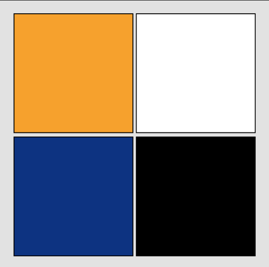Kleur van oranje is iets donkerder geworden omdat de icoontjes hier onder bij diensten maar in een bepaalde hoeveelheid tinten oranje kwam. Vandaar de aanpassing naar een donkerdere tint oranje.